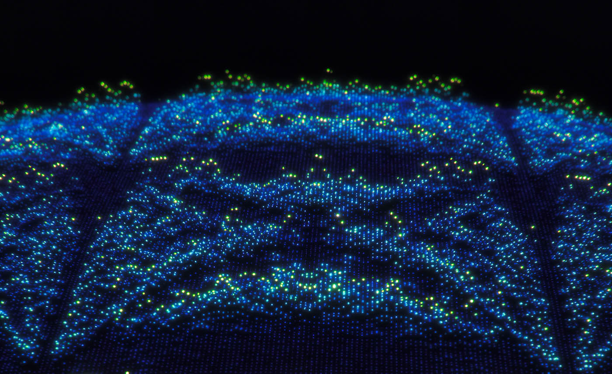
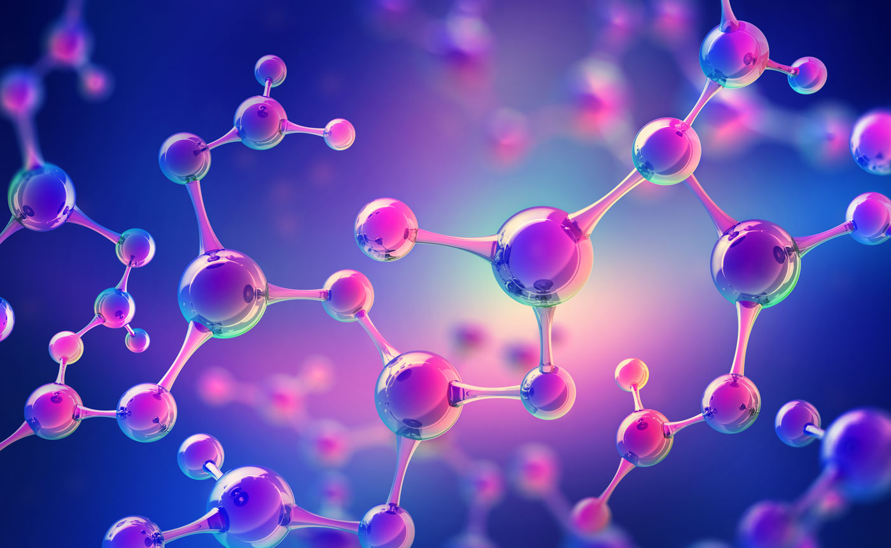

Why is Quantum Computing important?
Contents
Why is Quantum Computing important?¶

The entire justification for using a quantum computer for anything is penchant upon the idea that there are certain types of problems that are too difficult to solve using using classical computation. A great physicist famously said this:
Nature isn’t classical, dammit. If you want to make a simulation of nature, you’d better make it quantum mechanical.
Richard Feynman
Theoretical Physicist
Whether it was his idea or not, he was one of the first people to put forward the concept of a quantum mechanical device for simulating quantum mechanical things, especially as it was already so difficult to use classical computation for simulating large quantum mechanical systems (and it still is…).
Obviously, this idea caught on. But now it isn’t just Quantum Mechanics that quantum computers can be potentially useful for. It’s just about everything…
Just think about it… How much information a singular qubit holds by simply having the property of superposition. This drastically increases the computational space for the working of our problems, making qubit calculations way more efficient for solving hard problems.
The main challenge right now in Quantum Computing is the engineering of a full-scaled machine to tackle large problems.
Because qubits and quantum systems are sensitive things, it’s an engineering challenge to put enough of the them together onto a quantum chip and draw the connections between the qubits (cause we’ll need them to be able to interact in a controlled manner during a quantum computation). In any case, quantum computers are already being applied to various problems!
Applications of Quantum Computing¶

{kind=link}
Here are some applications of Quantum Computing! Click on the buttons to read more.
Simulating Quantum Mechanics and Quantum Chemistry
Molecular and Materials Design

This is the most obvious application of Quantum Computing. And it’s what Quantum Computing was originally planned for.
But why is simulating Quantum Mechanics even important?
It’s because Quantum Mechanics is at the heart of understanding the properties of things like photons and atoms.
Knowing why a particular chemical element behaves as it does and chemically reacts as it does, is a quantum mechanical problem! And so far, classical computation is not great at simulating Quantum Mechanics.
If we were able to predict why particular atoms have specific properties, we should also be able to predict the properties of molecules! From there, we will be able to know what molecules we can create for a particular purpose, and so on…
Medicine, Healthcare & Biology
Pharmaceutical Drug Design and Development
Computational Biology

It follows, that from being able to predict, design and simulate molecules, Quantum Computing should also be able to aid in the discovery of pharmaceutical drugs for specific diseases.
This could be simply scanning and predicting the success of already designed drugs in aiding treatment of a particular, or to actually simulating which drug will be the best candidate for treating a disease.
In Biology, understanding the relationship between the structure of proteins, how they fold, and their functions and roles in the human body are fundamental. With Quantum, we can address these complex bio-chemical computational problems, which can then allow us to design protein-based drugs.
Machine Learning and Artificial Intelligence
There’s a two-way relationship when we think of merging Quantum Computing and Artificial Intelligence.
From one side, it is thought that classical Machine Learning (ML) and Artificial Intelligence (AI) can surely be made more powerful on a quantum computer.
On the other hand, Quantum Computing can also benefit from ML and AI!
Right now, quantum computers have very few qubits and by merging a quantum circuit with an ML/AI model, we can enhance the capabilities of the current quantum computers.
Banking and Finance
Cryptography, Cybersecurity and Stock Trading
 Whilst Shor’s algorithm caused a lot of banking instutions to sweat in the 90s, there’s a great deal of potential benefit of Quantum Computing to the industry. With quantum cryptographic systems, banking institutions will be offered a new sense of protection against the incoming quantum revolution. Apart from this, Quantum Artificial Intelligence will be extremely powerful in the financial world in these ways: fraud detection, stock market prediction & stock trading, risk-reduced investing and efficient, optimized banking operation.
Whilst Shor’s algorithm caused a lot of banking instutions to sweat in the 90s, there’s a great deal of potential benefit of Quantum Computing to the industry. With quantum cryptographic systems, banking institutions will be offered a new sense of protection against the incoming quantum revolution. Apart from this, Quantum Artificial Intelligence will be extremely powerful in the financial world in these ways: fraud detection, stock market prediction & stock trading, risk-reduced investing and efficient, optimized banking operation.
And there’s more.
Weather Forecasting & Climate Change Prediction
Autonomous Driving
Anomaly Detection
Scheduling, Logistics & Large Manufacturing
Traffic and Routing
Quantum Communications & Quantum Internet
As you can already see, these are all big and complex problems. Surely, large-scaled Quantum Computing will revolutionize the entire world!